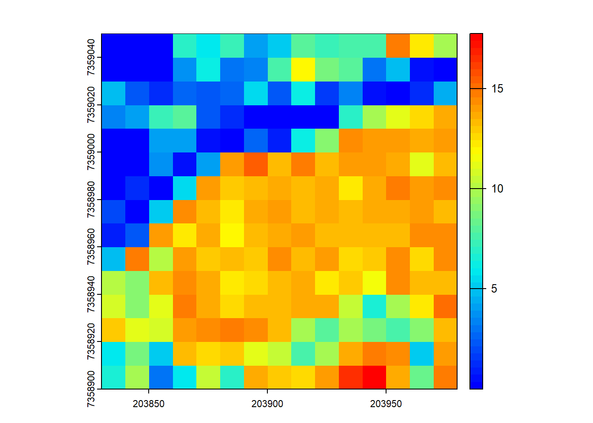
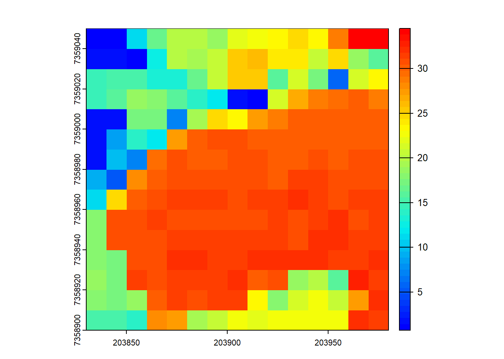
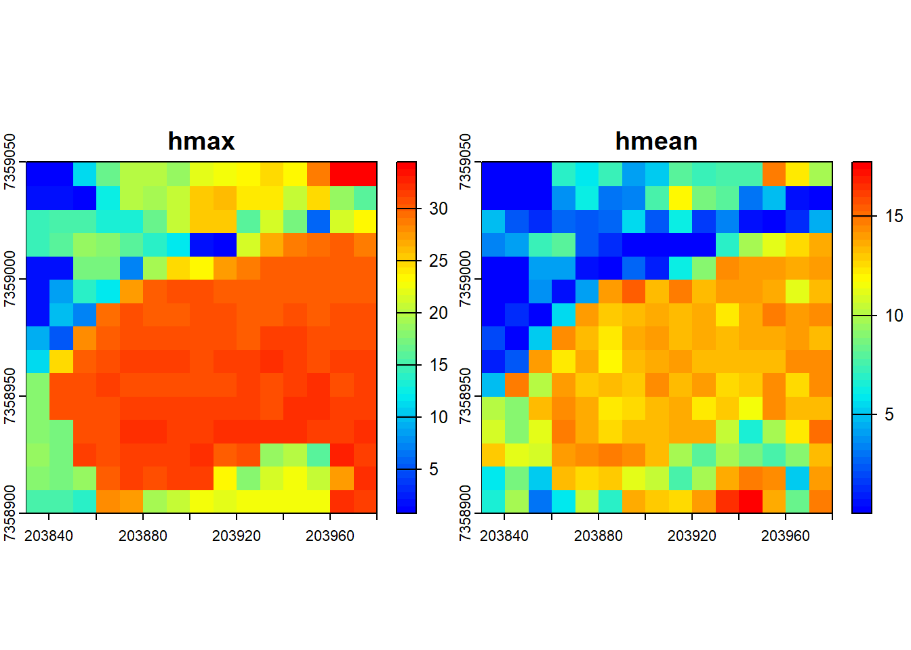
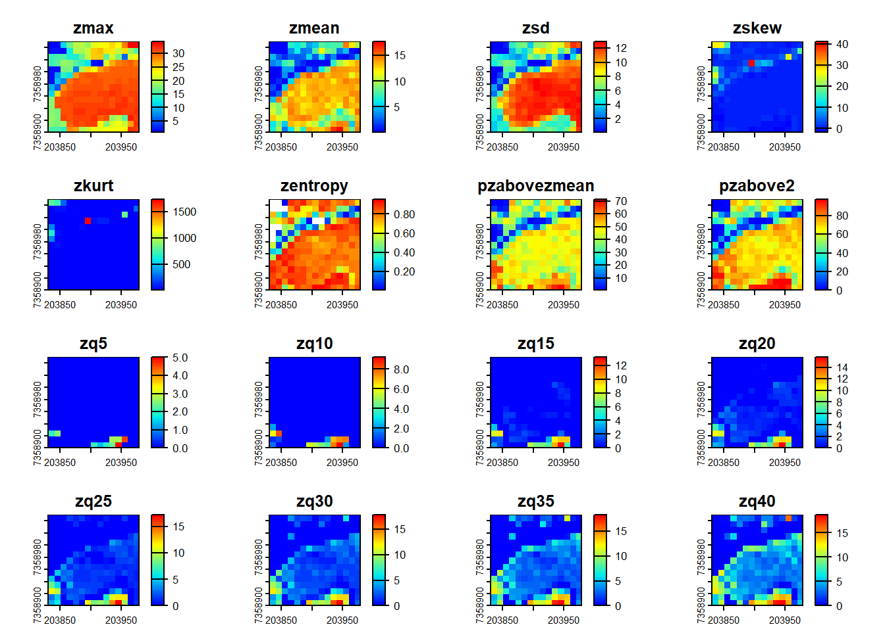
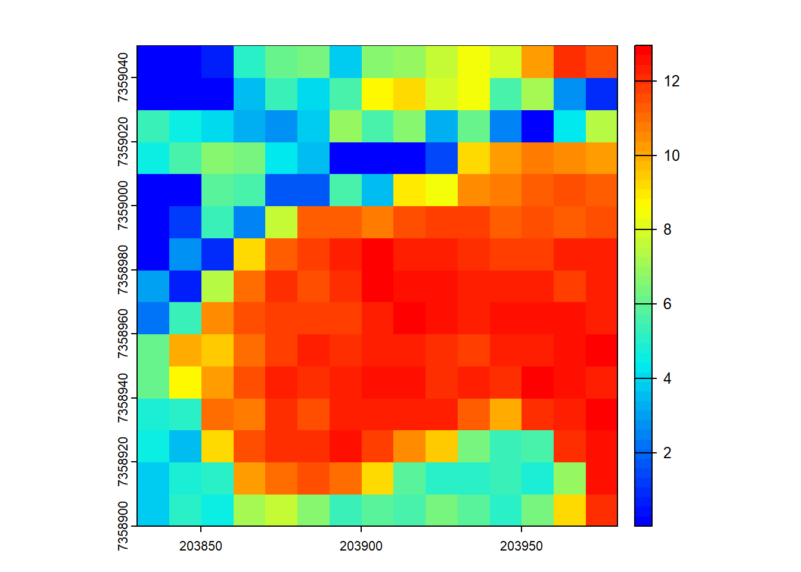
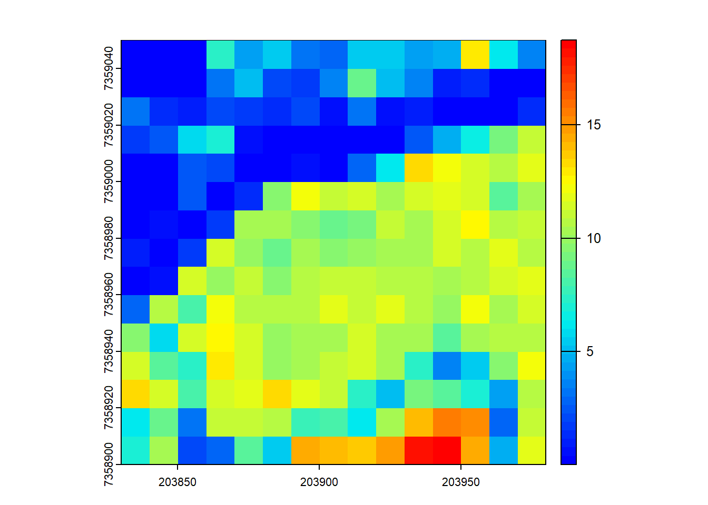

Area-based metrics
Relevant Resources
Overview
This code demonstrates an example of the area-based approach for LiDAR data. Basic usage involves computing mean and max height of points within 10x10 m pixels and visualizing the results. The code shows how to compute multiple metrics simultaneously and use predefined metric sets. Advanced usage introduces user-defined metrics for more specialized calculations.
Environment
# Clear environment
rm(list = ls(globalenv()))
# Load packages
library(lidR)
library(sf)Basic Usage
We’ll cover the basic usage of the lidR package to compute metrics from LiDAR data.
# Load LiDAR data, excluding withheld flag points
las <- readLAS(files = "data/MixedEucaNat_normalized.laz", select = "*", filter = "-set_withheld_flag 0")The pixel_metrics() function calculates structural metrics within a defined spatial resolution (res).
# Compute the mean height of points within 10x10 m pixels
hmean <- pixel_metrics(las = las, func = ~mean(Z), res = 10)
hmean
#> class : SpatRaster
#> dimensions : 15, 15, 1 (nrow, ncol, nlyr)
#> resolution : 10, 10 (x, y)
#> extent : 203830, 203980, 7358900, 7359050 (xmin, xmax, ymin, ymax)
#> coord. ref. : SIRGAS 2000 / UTM zone 23S (EPSG:31983)
#> source(s) : memory
#> name : V1
#> min value : 0.001065319
#> max value : 17.730712824
plot(hmean, col = height.colors(50))
# Compute the max height of points within 10x10 m pixels
hmax <- pixel_metrics(las = las, func = ~max(Z), res = 10)
hmax
#> class : SpatRaster
#> dimensions : 15, 15, 1 (nrow, ncol, nlyr)
#> resolution : 10, 10 (x, y)
#> extent : 203830, 203980, 7358900, 7359050 (xmin, xmax, ymin, ymax)
#> coord. ref. : SIRGAS 2000 / UTM zone 23S (EPSG:31983)
#> source(s) : memory
#> name : V1
#> min value : 0.75
#> max value : 34.46
plot(hmax, col = height.colors(50))
You can specify that multiple metrics should be calculated by housing them in a list().
# Compute several metrics at once using a list
metrics <- pixel_metrics(las = las, func = ~list(hmax = max(Z), hmean = mean(Z)), res = 10)
metrics
#> class : SpatRaster
#> dimensions : 15, 15, 2 (nrow, ncol, nlyr)
#> resolution : 10, 10 (x, y)
#> extent : 203830, 203980, 7358900, 7359050 (xmin, xmax, ymin, ymax)
#> coord. ref. : SIRGAS 2000 / UTM zone 23S (EPSG:31983)
#> source(s) : memory
#> names : hmax, hmean
#> min values : 0.75, 0.001065319
#> max values : 34.46, 17.730712824
plot(metrics, col = height.colors(50))
Pre-defined metric sets are available, such as .stdmetrics_z. See more here.
# Simplify computing metrics with predefined sets of metrics
metrics <- pixel_metrics(las = las, func = .stdmetrics_z, res = 10)
metrics
#> class : SpatRaster
#> dimensions : 15, 15, 36 (nrow, ncol, nlyr)
#> resolution : 10, 10 (x, y)
#> extent : 203830, 203980, 7358900, 7359050 (xmin, xmax, ymin, ymax)
#> coord. ref. : SIRGAS 2000 / UTM zone 23S (EPSG:31983)
#> source(s) : memory
#> names : zmax, zmean, zsd, zskew, zkurt, zentropy, ...
#> min values : 0.75, 0.001065319, 0.02499118, -1.860858, 1.127885, 0.005277377, ...
#> max values : 34.46, 17.730712824, 12.95950270, 41.207184, 1738.774391, 0.955121240, ...
plot(metrics, col = height.colors(50))
# Plot a specific metric from the predefined set
plot(metrics, "zsd", col = height.colors(50))
Advanced Usage with User-Defined Metrics
lidR provides flexibility for users to define custom metrics. Check out 3rd party packages like lidRmetrics for suites of metrics.
We can also create our own user-defined metric functions. This demonstrates the flexibility of the lidR package!
# Generate a user-defined function to compute weighted mean
f <- function(x, weight) { sum(x*weight)/sum(weight) }
# Compute grid metrics for the user-defined function
X <- pixel_metrics(las = las, func = ~f(Z, Intensity), res = 10)
# Visualize the output
plot(X, col = height.colors(50))
Exercises and Questions
Using:
las <- readLAS("data/MixedEucaNat_normalized.laz", select = "*", filter = "-set_withheld_flag 0")E1.
Assuming that biomass is estimated using the equation B = 0.5 * mean Z + 0.9 * 90th percentile of Z applied on first returns only, map the biomass.
E2.
Map the density of ground returns at a 5 m resolution with pixel_metrics(filter = ~Classification == LASGROUND).
E3.
Map pixels that are flat (planar) using stdshapemetrics. These could indicate potential roads.
Conclusion
In this tutorial, we covered basic usage of the lidR package for computing mean and max heights within grid cells and using predefined sets of metrics. Additionally, we explored the advanced usage with the ability to define user-specific metrics for grid computation.